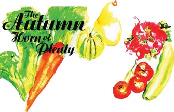
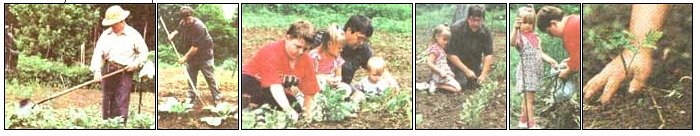

Maintain a year-round harvest and bountiful table with both bolt-ans frost-resistant late summer vegetables.
As the seasons change, so do the requirements for keeping the home garden growing properly. Here in Middle America, fall is a season to be revered. There is so much to do and so much can be accomplished that there is no need to consider this season of spectacular color as merely a short interim before winter. I can assure you that gardening in the fall can be just as productive as gardening in spring and summer. . .and with substantially reduced mosquito problems!
I consider myself a lucky individual to have been properly trained by my father and uncle in how to garden:, and harvest in the fall. All of us do our planting and harvesting near the banks of the Big Sandy River here in the mountains of eastern Kentucky, and that terrain poses special challenges. I do realize that most folks will be gardening in areas that are not as sheltered and likely' riot as sloping, but fall gardening is easily adaptable to nearly all situations. Though Dad has been gone for 16 years now, I can still see him walking over the riverbank with his trusty hoe over his shoulder, ready to do battle with the various assortment of weeds that persistently made a nuisance of themselves. I can honestly say Dad never tired of the constant war he engaged in. He believed fervently in a "clean" garden-using whatever method it took. Though hoeing is perhaps not the easiest way to keep weeds at bay, it is one of the best and most commonly employed. If you have the resources available to mulch enough to control weeds, by all means, do it! If not, be sure to keep a sharp hoe at hand.
My Uncle Red is a master gardener and has his garden near mine over the bank. Though in his mid-80s, Uncle Red's passion for gardening has never waned with the years. I wish all my readers could visit his garden and this amazing man with his trusty shovel at hand. Yes, I did say shovel! Though he does use a hoe, it is absolutely amazing how adeptly he cleans his garden with his shovel. It's not your ordinary model either. It has a serrated edge. You heard me right-serrated, and he put that edge there himself, hand-filing every small notch until it was a formidable weapon. Weeds and soil are no match for this unique tool.
Where do you start? Good question. You start in the summer, making your plans. Gardening without a master plan is an invitation to disaster, so we'll begin in August. If you plan on growing cole crops such as cabbage, broccoli, or cauliflower, and I suggest you do, those plants need to be started by mid-to-late summer at the latest. It's likely you'll have to start your own, because few garden centers offer plants of those items other than in the spring; the only exception being the South. You can start your seeds in flats if you like, but I usually start them right in the ground, keeping them moist before, during, and after they sprout.
I also like to try a few late tomatoes in the same manner. It might be a good idea to start the tomato seeds a week or so before the vegetables mentioned above. Though most will mature about the same time as the majority of cole crops, tomatoes do not tolerate frost well and flat out cannot handle a freeze. On the other hand, most cole crops actually thrive under cool weather conditions.
Photos By Rhonda Simpson
Such seed beds should be prepared by adding copious amounts of soil builders such as compost, manure, and even peat moss, which help the soil to retain moisture, even during the August heat. After the plants are large enough to transplant to their permanent locations, I like to choose sites that will receive good drainage and receive proper sunlight. While cole crops can handle some shade, tomatoes do better in full sunlight. I know some folks have no choice and have to make do with a shady area, and that's okay if that's all you have. Tomatoes will produce in the shade but not as abundantly.
All vegetables respond to rich nutrients and ample moisture, so fall planted cole crops and tomatoes are no exception. In addition, care should be taken to select varieties that are resistant to diseases prevalent in your area. In my area, it's best to go with yellow resistant cabbage varieties and VFN resistant tomatoes. That's not to say non-resistant stand-ups such as Early Jersey Wakefield cabbage and Marglobe tomato won't give you a crop. They might, but why settle for "might."
What should you choose? I thought you would never ask. Hands down, the best-tasting cabbage is the aforementioned Early Jersey Wakefield. If yellows are not a problem, by all means, grow it-early or late. If yellows decimate your cabbage patch, you might want to turn to Stonehead. Readily available, Stonehead offers a solid head that keeps well and has fine quality. Its name does not do it justice. It's tender and quite delicious when steamed or sauteed. There is also a yellow resistant Wakefield type available called Charleston Wakefield, but it's not often available and its quality is a shade below Early Jersey. The heads are pointed like Jersey and larger, and quality is better than most. Any of the three would be terrific choices. Looking at tomatoes, I do not know that I could think of a better choice than the venerable Better Bay or Uncle Red and Uncle Luke's personal favorite, Super Fantastic VFN. These VFN resistors do mature a little late, so care must be taken in variety selection if you live in the far North. You might then want to turn to something that matures a week or so earlier, such as Stokes Seeds's Ultra Sweet. It's very disease resistant and has the incredible "Taste Bud" gene bred into it. Maturing in just 62 days, it's a terrific choice.
To insure steady growth with fall cabbage and tomatoes, be sure to keep them well-watered and well-fed. With cabbage, well-fed means adding lots and lots of manure. If you want sweet, tender cabbage, just keep the manure coming and you'll be amazed. Now the tomato is a horse of a different color. You don't want heavy manure here. It's loaded with nitrogen, which tends to force tomatoes to leaf production, rather than fruit production-a definite "no-no"with love apples.
One of my secrets might surprise you. I get my absolutely best tomatoes when I use Epsom salts. Don't laugh! It works. Added to the hole at the time the plants are set out and sprayed on as the season goes on, the salts seem to give the tomatoes a real boost. Half a cup at planting time, and that much added to a three gallon sprayer, will be sufficient, though using more or less can give similar results.
You have to experiment and find out for yourself what works for you. While adding the salts to your spray, be sure to include fish emulsion. Together they are a wonderful tonic for tomatoes, as well as many other veggies.
I should add here that it is also a good idea to use the same techniques for growing fall crops of other coles, as well as peppers. I will take just a moment or so to recommend a few varieties for autumn cropping.
Johnny's Selected Seeds has a fine line of cole selections. Their Arcadia is great for fall production. Bred to tolerate stress of all sorts, Arcadia resists both heat and cold, making it ideal for fall crops.
Though not as heat or cold tolerant as broccoli, cauliflower can be grown in the fall. There are varieties more suited for such conditions. One is Johnny's Amazing. Only available since 1994, Amazing is just that. Plan it just right, and you can harvest the tender white heads just ahead of freezing weather.
Brussels sprouts have long been a cold weather favorite and Johnny has a new one that outdoes all the others. Their Igor is likely the best cold-tolerant high-quality sprout you'll ever try. Don't even worry about getting a harvest before cold weather. These tasty little tidbits stay right on the stalk well into winter before quality is lost.
How do you store your bounty? Most cabbage will take frosts and some light freezes and retain their quality. If extremely cold weather sets in before your crop is used up, just select a site easy to get to in winter, pull your cabbage (roots and all), turn them upside down, and cover very well with a thick mulch of straw. Just dig down into the straw after cold weather sets in and you'll have perfect cabbage for winter use.
I wish it were that easy with tomatoes. Not so. It does take some planning. Of course, you can pick all you want and bring in before freezing to ripen inside. That can include nearly all the unripened fruits. Always make sure there are no blemishes, whether they be bruises or disease. Either will cause the fruits to rot. I like to lay the tomatoes in boxes, between layers of newspapers, and place in a warm room. They will ripen and the boxes have to be checked from time to time for those getting ripe and for those showing decay.
Coles and tomatoes are only a couple of veggies I like to concentrate on in the fall. One of my fall favorites is the leek. Mostly ignored now, the leek was one of the first cultivated veggies, and for centuries in Europe, highly prized. I like them because they are nearly care-free. Anyone who likes onions should give the leek a go.
I like to plant in mid- and late summer, keeping the seed moist until it sprouts. They are best planted half-inch deep and thinned as they grow, to about six inches apart. The thinnings can be used as green onions and are quite tasty. Some like to plant in trenches but not 1.1 just use a shovel or hoe to hill dirt around as they grow. This blanches the large edible stems, and in my experience results in substantially better plants. Be sure to keep well-watered and use lots of manure or compost. They winter over quite well here, but a heavy blanket of straw mulch will insure leeks right into spring in even colder climates.
In the emerald valleys of Pike County, Kentucky, no home gardener would even consider a fall garden without greens. It just so happens that the green of choice in this area is the mustard green. Believe me, a late fall patch of Southern Giant Curled is a prerequisite, an absolute essential. Here it is almost heretical to plant any other variety. Since I like to experiment, I've tried just about all of them. Admittedly, I like Southern Giant Curled the best, but I've learned to enjoy others as well, Florida Broadleaf and Tender green in particular. Florida Broadleaf is good for warm areas as it does resist bolting, and Tendergreen is favored by those who like spinach, as the flavor is similar.
For our purpose, however, let's just concentrate on Southern Giant Curled. Uncle Red grows about the best greens I've ever seen. They are huge and bursting with that good old-time mustardy tang. He likes to use his trusty shovel to turn the soil and flatten it until level. He works in patches or rows that vary. They are usually about 20 feet long and two or three feet wide. He pours on the organic matter-whatever at hand-sows thickly, and sets back and waits for the good eatin' to come. And it does.
Last year he also planted a row of Purple Top White Globe turnips in the same manner. He's not much for turnips but I am, and I dipped liberally into his patch. You should have seen the turnips that came on later. Some were larger that softballs. They were sweet and tender and bursting with flavor. Sliced thinly, and cooked in a pot with sugar and butter added, you've got yourself a tongue pleaser for sure.
Of course, other greens do just as well. Some are even more cold tolerant, and so, better for fall cropping, such as kale. In our area, greens are generally planted around August 15th, and it's not unusual to pick greens here until Thanksgiving. Kale can be picked even longer, even when snow is on the ground. Cultural requirements are pretty much the same as for any of the coles or mustards.
Not to take anything away from the standard varieties usually grown, such as Dwarf Blue Curled and Siberian Improved, the Winterbor is probably the sweetest kale I've tried. To that, add the fact it is among the cold-hardiest of all greens and you've got a perfect green for fall crops.
No fall garden would be complete without beets and carrots, in my opinion. Both are quite versatile and can be sown at intervals from spring to late summer. Soil requirements are similar. Both do well in my sandy loam, but can be grown in most soil types. Beets do well with an addition of lime when planting, and carrots need a soil nearly free of stones and rocks. Those can cause poorly shaped roots.
There are approximately one zillion varieties of carrots available now, and a nearly equivalent number of beet selections to choose from. There are carrots for fresh use and carrots for canning. There are beets suited for pickling and beets suited for fresh use, so it's a matter of choice. As for storing, both are somewhat cold tolerant (carrots more so) and seem to improve with some fall frosts. Beets do better stored in damp sand in a cool basement but carrots will do fine in the garden if heavily mulched. In some cases, all that is required is a little soil heaped on top just before hard freeze settles in. Of course, they are easier to harvest if a nice layer of straw is added to the top. You'll be amazed at how sweet a carrot can be when unearthed in December. Storage seems to increase sweeteners, rather than take it away.
I do have a few personal favorites I'd like to mention. As for carrots, I don't believe you can beat Ed Hume's Ingot. Nantes types have long been esteemed for their quality and this is one of the best. This long nantes type has actually been declared a winner in national taste tests, and should be tried by folks looking for a good carrot for fall. The other carrot I favor is offered by D.V. Burrell. Their Chantenay Royal is a winner. The huge, fat roots are bursting with flavor and seem to resist cold weather deterioration far better than most.
Beets have long been an English favorite, and Thompson and Morgan Seeds, the esteemed English firm with a branch in New Jersey now, has some of the finest varieties available. Their Rubidus (a Detroit type) all but eliminated bolting in beets. I also like the fact they can get as big as a softball and still not get woody. Generally, if a beet grows larger than a baseball, it's likely to get woody and fibrous. Not here.
Another dandy they offer is Cylinder. My wife loves this variety because it is long, much like a carrot. This makes it terrific for slicing. Since almost all of our beets are used for pickling, ease of slicing is very important. That's why I very rarely ever have to worry about storing beets. Nearly all are used for pickled beets, an old Elswick family favorite. I like to grow both in hilled-up rows about a foot high. Beets rows are well lined and both get lots of compost and manure, and they seem to thrive under such conditions. Watering is important, since rain is usually scarce at this time of the year. I like to make my last plantings about the same time as greens are planted, around August 15 in my area.
It is unfortunate that so few folks make a point to plant vine crops in the fall. It is entirely feasible, especially now that there are so many really good early maturing varieties available. That's especially important with melons, both cantaloupe and watermelon. The vine crop I most often grow in the fall is the cucumber, which seems to really thrive in the cooler nights of late summer and early fall. Remember Uncle Red? Cukes are one of his specialties. He will not grow a cuke on the ground. He trains them up a fence where they crop tremendously. While just about any cuke will climb, his favorite is Burpee's Green Knight. It's a long burpless type that is especially esteemed for sweet, tender cukes. Uncle Luke loves to pile aged manure and compost generously around the plants. You should see them grow. The same goes for late melons.
Until recently, one had to plant honeydews as early as possible since maturity was so late. Now Pinetree Seeds offers Early Dew, a super new early-maturing honeydew. Quality is superb and unlike most honeydews, the fruits slip from the vine when ripe. Another dandy early cantaloupe from Pinetree is Fastbreak. Maturing in little more than two months, it is entirely possible to get a crop if planted by early August. Same goes for Sugar Baby, a super early watermelon from Pinetree. Why not give melons a shot as a fall crop?
There are some veggies that do require a long season to mature, so fall planting isn't feasible. However, some of those mature so late, storage is necessary in the fall. One in particular is the sweet potato. While not grown in nearly as many gardens as other veggies like tomatoes or sweet corn, sweet potatoes are very popular in my part of the country. Well-suited to our climate, they produce in abundance here. Too often, though, finding a place to store them is a real problem. If you have any space under your porch or house, you could have the perfect place right under your nose. Sweet potatoes do fine in a cool, dark place that doesn't freeze. Most likely the heat from your house will be all that's needed. Of course, a good old-fashioned smokehouse would work fine, too.
Another late-blooming green that matures late and requires a suitable storage space is the cushaw. A nook under your house would be perfect. Hulls on cushaws are so thick, not much protection from cold is needed. Uncle Red says he'll often throw a blanket over his cushaws and his squash. If covered, the cushaw can be stored in a tool house or any sort of enclosed shed. The same goes for all sorts of winter squash such as hubbards and butternuts. Fall is a grand time. Make it a great season in the home garden as well!
SEEDS SOURCES
Pinetree
Box 300
New Gloucester, ME 04260
(207) 926-3400
Johnny's Selected Seeds
Foss Hill Rd
Albion, ME 04910
(207) 437-9294
DV Burell
PO Box 150
Rockyford, CO 81067
(719) 254-3318 Burpee
300 Park Ave.
Warminster, PA 18974
(800) 333-5808
Stokes Seeds
Box 548
Buffalo, NY 14240
(716) 695-6980
Thompson and Morgan
Box 130
Jackson, NJ 08527
(908) 363-2225
|
 Illustrations By Bari Goodman Lloyd |
 |
|